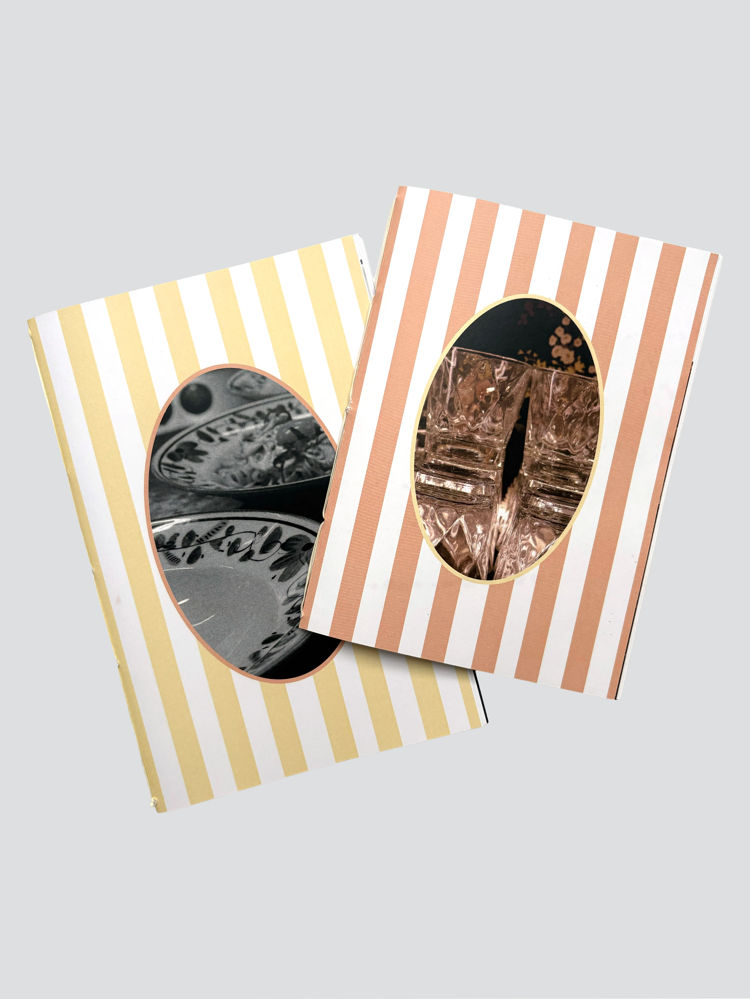
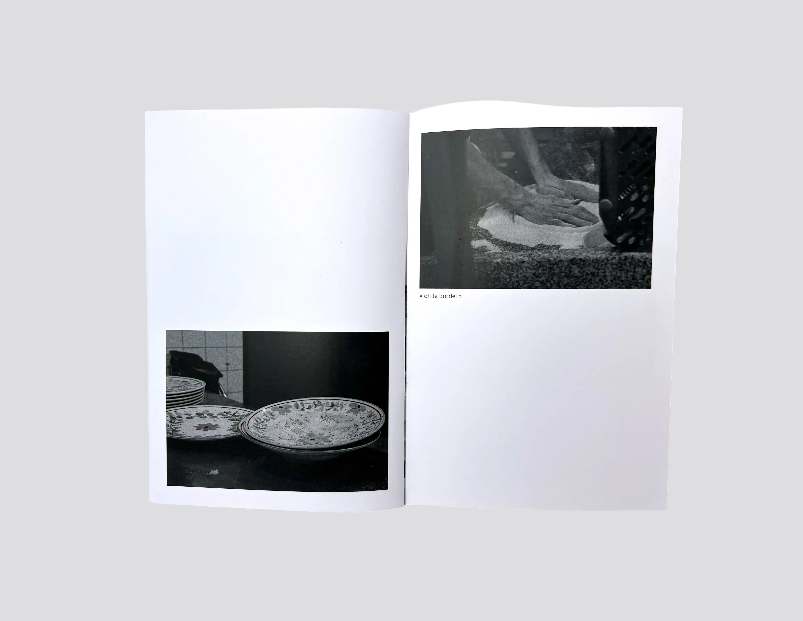
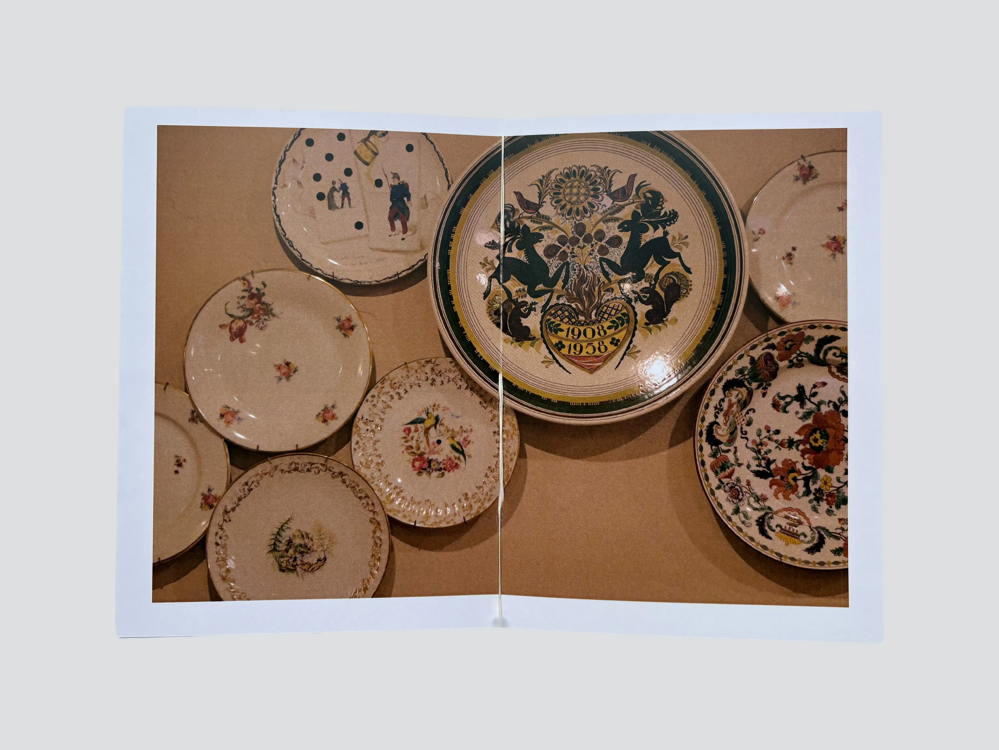
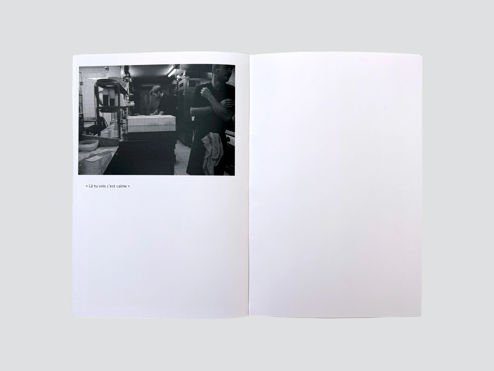

Humeurs italiennes
édition photographique





Direction les cuisines d’un restaurant, là où l’association prend tout son sens, gestes synchronisés, regards qui se comprennent, et une coordination bien rodée — le tout accompagné d’un parfum de cuisine italienne. Une première édition met en lumière ces scènes de cohésion entre les cuisiniers, tandis qu’une seconde, plus discrète, se consacre au restaurant qui accueille ce ballet quotidien.